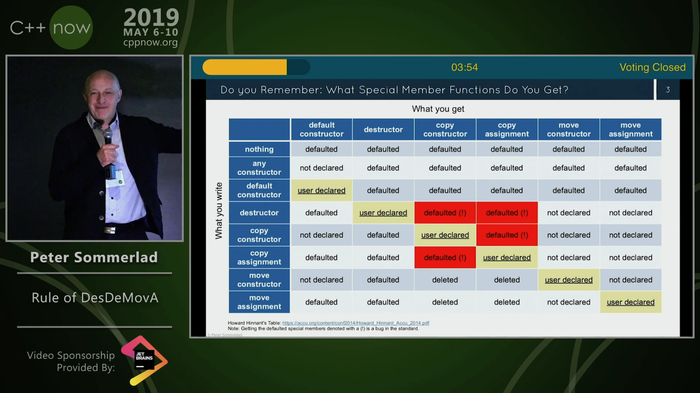
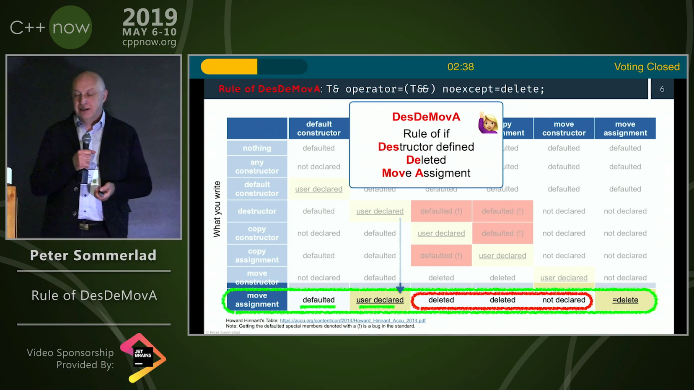
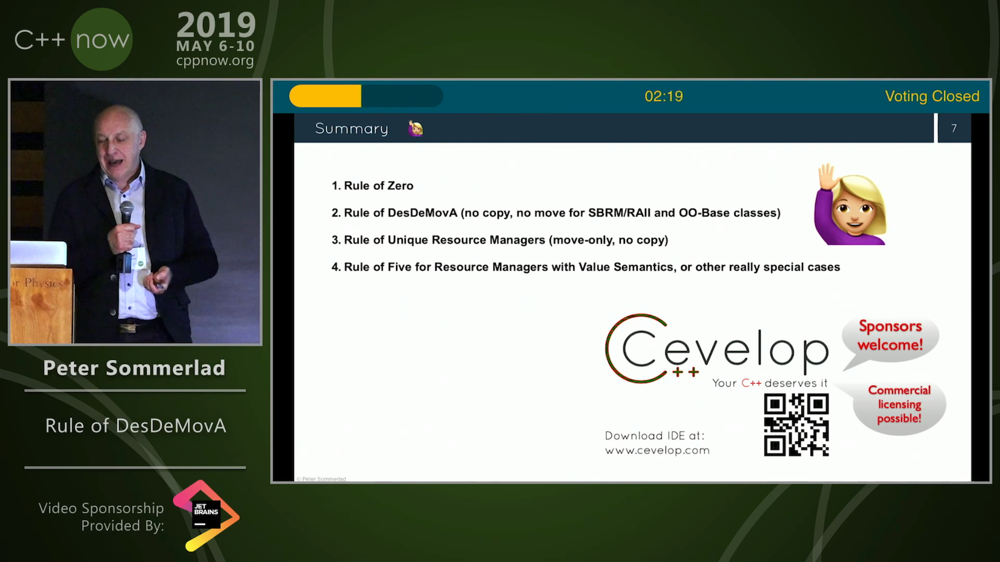
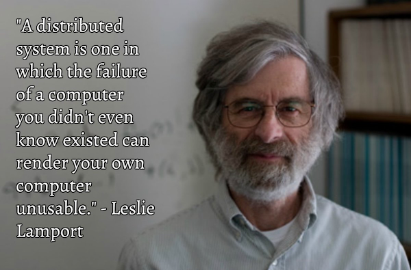

2019-08-01
https://herbsutter.com/2019/07/25/survey-results-your-top-five-iso-c-feature-proposals/
https://www.reddit.com/r/cpp/comments/ci0uz6/survey_results_your_top_five_iso_c_feature/
https://www.reddit.com/r/cpp/comments/c68457/simplify_your_code_with_rocket_science_c20s/
https://www.reddit.com/r/cpp/comments/c6gtd4/how_do_you_get_the_benefits_of_rust_in_c/
https://www.reddit.com/r/cpp/comments/c6l3eg/how_do_c_developers_manage_dependencies/
Through much pain and anguish.
Now you write something like TD<decltype(thing)> and the error message tells you the type of thing (as deduced by decltype, of course, but in this case that's probably what you want).
https://www.reddit.com/r/cpp/comments/c6vnb3/just_started_learning_c_coming_from_python_and/
The new GCC compiler with colour highlighting is a little bit better at pointing out errors. It's generally quite helpful for pure C/C++ until you make an error with the standard library and you get 200 lines about std:: whatever<random characters>
In C++ a trick I always use when the error message is massive is to just focus on the first error.
https://blog.trailofbits.com/2019/06/27/use-constexpr-for-faster-smaller-and-safer-code/
https://www.reddit.com/r/cpp/comments/c646ng/use_constexpr_for_faster_smaller_and_safer_code/
https://github.com/trailofbits/constexpr-everything (Apache 2.0)
https://github.com/SanderMertens/bake (GPLv3)
A cargo-like buildsystem and package manager for C/C++
Magic.
Blog post by Peter Sommerlad
https://blog.safecpp.com/2019/07/01/initial.html
https://accu.org/content/conf2014/Howard_Hinnant_Accu_2014.pdf
Rule of Zero:
Code that you do not write cannot be wrong.



Article by Anthony Williams
https://www.justsoftwaresolutions.co.uk/cplusplus/strong_typedef.html
https://github.com/anthonywilliams/strong_typedef
using transaction_id =
jss::strong_typedef<struct transaction_tag, std::string>;
bool is_a_foo(transaction_id id)
{
auto &s = id.underlying_value();
return s.find("foo") != s.end();
}https://www.cycfi.com/2019/07/photon-micro-gui/
https://www.reddit.com/r/cpp/comments/ccq9pn/elemental_c_gui_library/
http://cppcast.com/2019/07/robert-maynard/
https://www.reddit.com/r/cpp/comments/c9bpxb/cppcast_cmake_and_vtk_with_robert_maynard/
http://dominikberner.ch/cmake-interface-lib/
https://www.reddit.com/r/cpp/comments/c8ty2h/a_line_by_line_explanation_how_to_create_a/
https://github.com/bernedom/SI
Professional CMake: A Practical Guide, 4th ed., CMake 3.15 https://crascit.com/professional-cmake/ $30
https://herbsutter.com/2019/07/25/survey-results-your-top-five-iso-c-feature-proposals/
